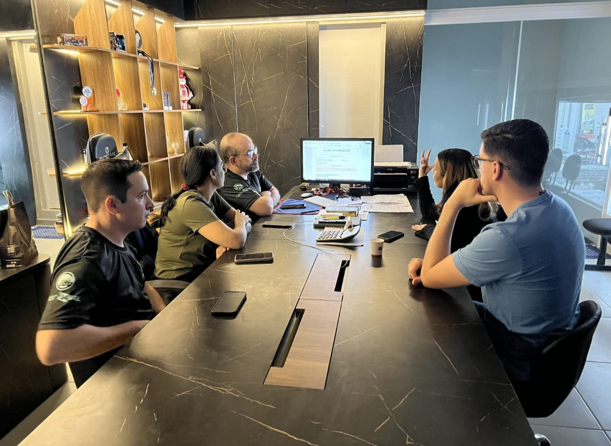
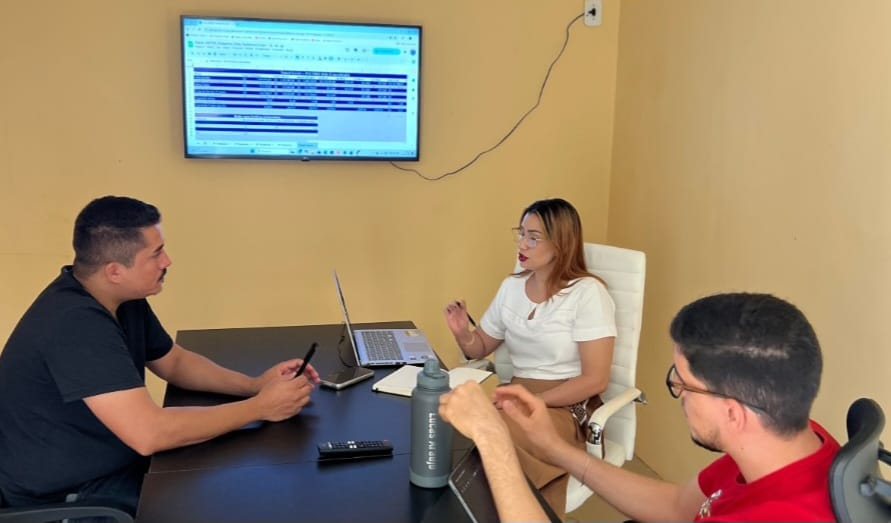

Quem somos
O INETRIS Instituto atua no desenvolvimento de pessoas, empresas e instituições por meio de mentorias, consultorias e formações estratégicas. Nosso objetivo é fortalecer líderes, organizar negócios e gerar resultados reais através de conhecimento prático, gestão eficiente e direcionamento estratégico.

Como ajudamos
O INETRIS Instituto ajuda empresas, líderes e instituições a crescerem com mais organização, estratégia e clareza. Atuamos identificando desafios, estruturando soluções práticas e desenvolvendo pessoas para melhorar a gestão, fortalecer equipes e gerar resultados mais consistentes.
O que fazemos
O INETRIS Instituto oferece soluções em mentoria, consultoria, formação de líderes e desenvolvimento empresarial. Trabalhamos para ajudar empresas, gestores e equipes a melhorar sua organização, fortalecer a liderança e alcançar melhores resultados com estratégia e prática.
